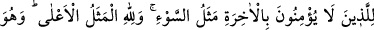
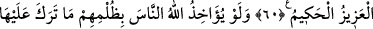
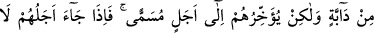
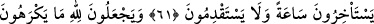
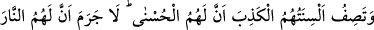
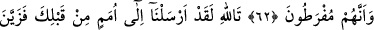
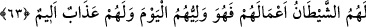

NE BİR SAAT GERİ
NE BİR SAAT İLERİ!
60. Kötü sıfat, âhirete inanmayanlar içindir. En yüce sıfatlar ise Allah’a âiddir.
Çünkü O, her şeyden üstün ve hikmet sâhibidir.
61. Eğer Allah, insanları zulümleri yüzünden cezalandıracak olsaydı, yeryüzünde
hiçbir canlı bırakmazdı. Fakat onları takdir edilen bir müddete kadar erteliyor.
Ecelleri geldiği zaman onlar ne bir saat geri kalabilirler ne de öne geçebilirler.
62. Kendilerinin hoşlarına gitmeyen şeyleri Allah’a isnad ediyorlar. En güzel
sonucun kendilerinin olduğunu anlatan dilleri de yalan söylüyor. Hiç şüphesiz onlar
için sâdece ateş vardır ve onlar, (ateşe) terk olunacaklar.
63.
Allah’a
andolsun,
senden
önceki
ümmetlere
de
(peygamberler)
göndermişizdir. Fakat şeytan onlara işlerini süslü gösterdi de (îmân etmediler). İşte
o, bugün onların velisidir. Ve onlar için elem verici bir azap vardır.
Çirkinlik konusunda kendisi ile örnek verilen “kötü sıfat,” yukarıda kabahatleri
zikredilen “âhirete inanmayanlar içindir.” Bu da, öldükten sonra yerine geçecek
çocuğa ihtiyaç duymaları, bu yüzden iftihar kaynağı olarak erkek çocuklarını tercih edip,
evlenmek için ihtiyaçları olsa bile fakir düşme korkusu ve üzerlerinden utancı ve
utanmayı atmak için kız çocuklarını diri diri gömmeleridir. İşte bütün bunlar acziyet,
noksanlık ve nefret edilen ihtiras alâmetleridir.
“En yüce sıfatlar ise Allah’a âiddir.” Bunlar ise mutlak yücelik sıfatları olan
varlığının zâtî olarak zorunlu olması, mutlak olarak hiçbir şeye ihtiyaç duymaması,
varlığının genişliği ve yaratılmışlara âid sıfatlardan berî ve münezzeh oluşudur.
“Çünkü O, her şeyden üstün” Aziz’dir; kuvvet ve kudret sâhibi olma konusunda
tektir. Özellikle de onları yakalayıp cezalandırma konusunda “ve hikmet sâhibidir.”